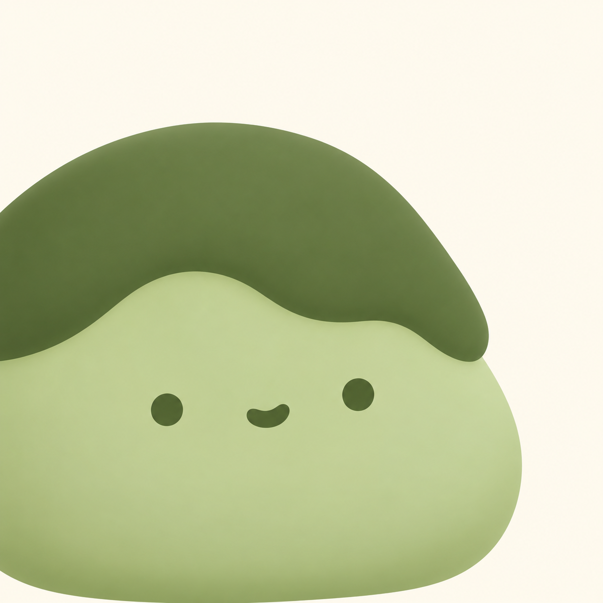
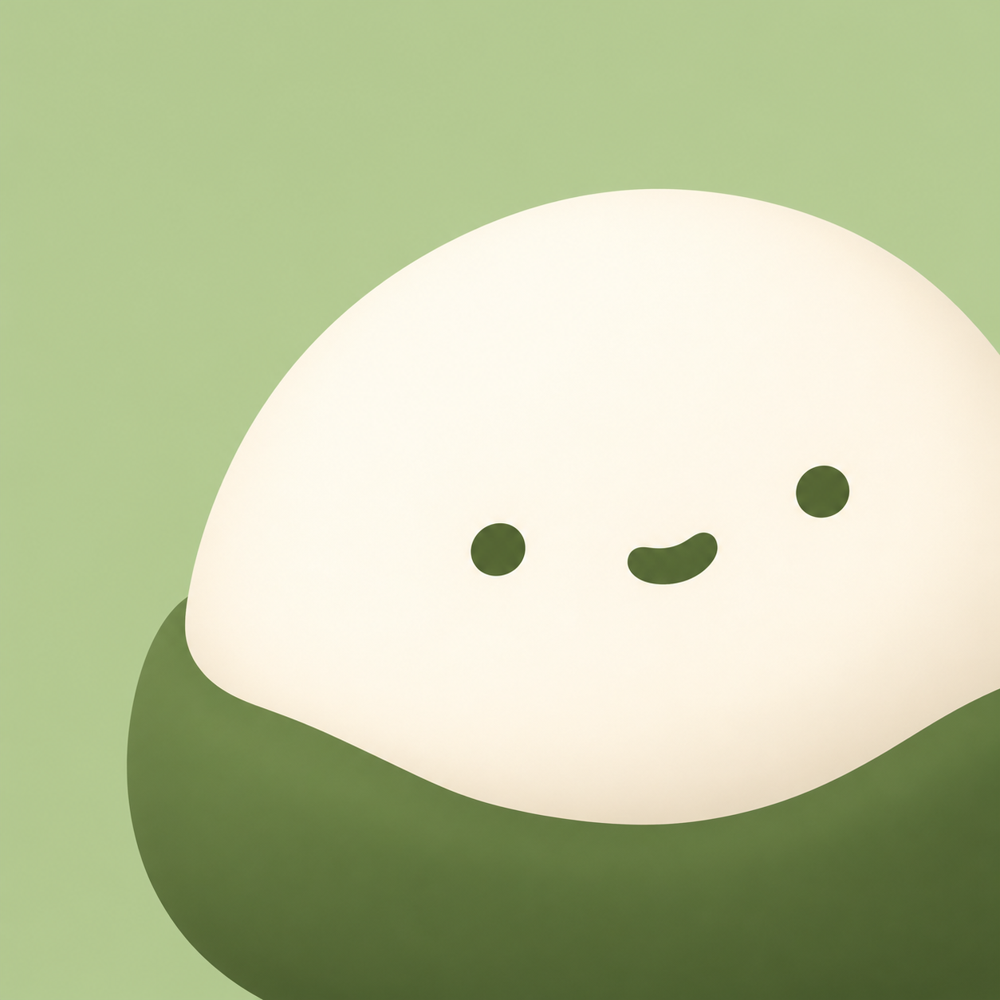
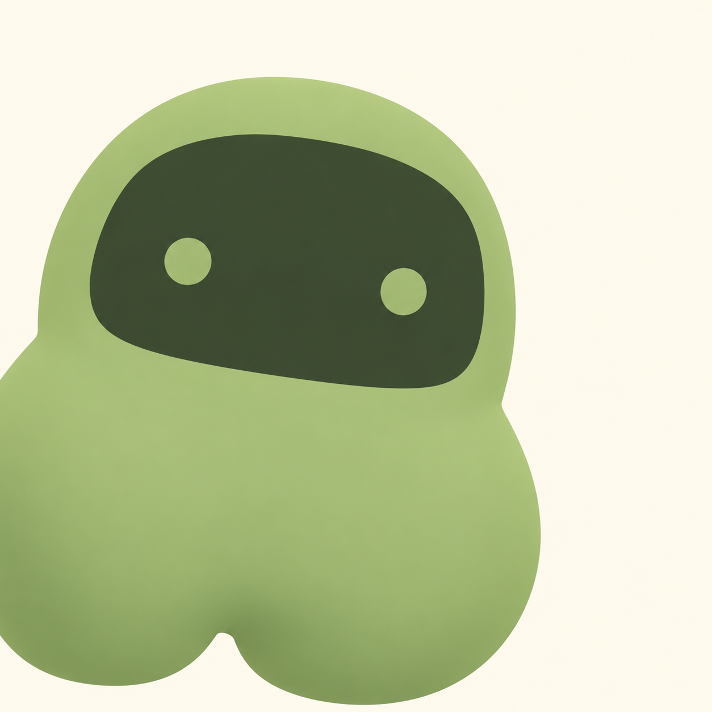
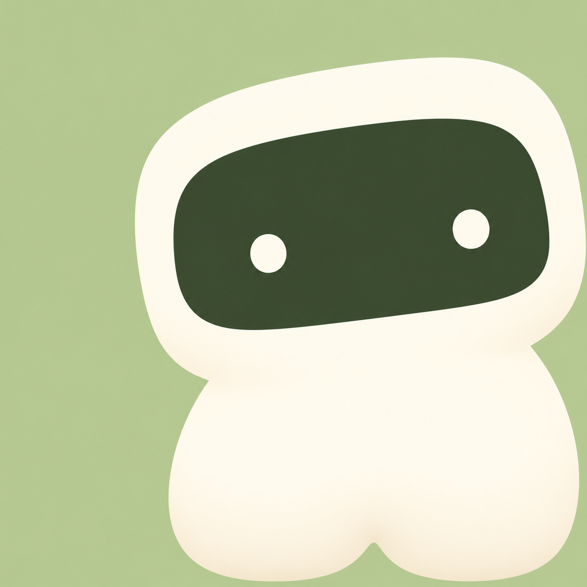
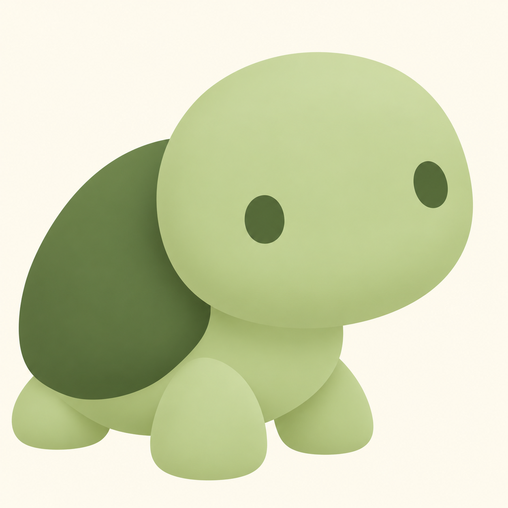
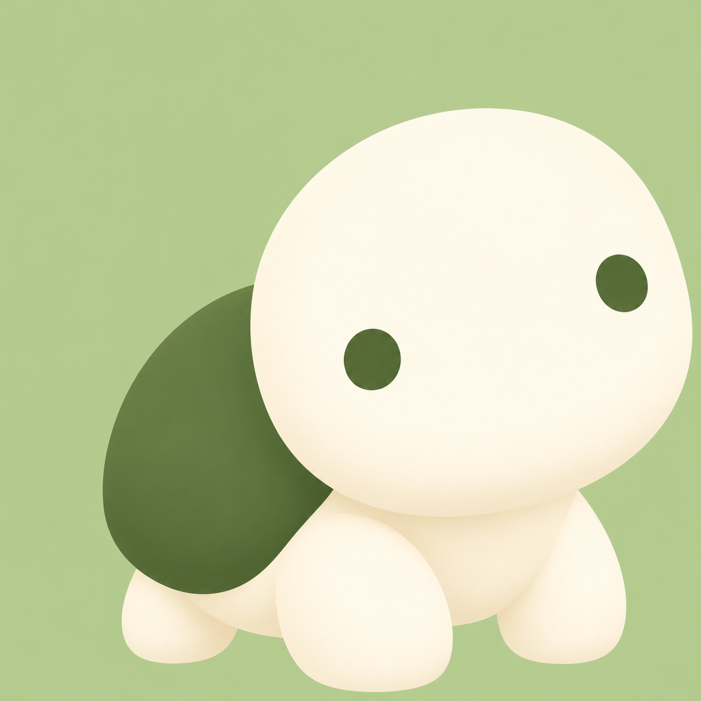

A1 · Matcha mochiA soft companion that makes the Mochi name memorable.Lower left · 1254 × 1254 original Select A1
A2 · Matcha mochiA soft companion that makes the Mochi name memorable.Lower right · 1254 × 1254 original Select A2
B1 · Window spiritA friendly little window into your Mac.Lower left · 1254 × 1254 original Select B1
B2 · Window spiritA friendly little window into your Mac.Lower right · 1254 × 1254 original Select B2
C1 · Pocket turtleCarry your desktop with you, wherever you go.Lower left · 1254 × 1254 original Select C1
C2 · Pocket turtleCarry your desktop with you, wherever you go.Lower right · 1254 × 1254 original Select C2